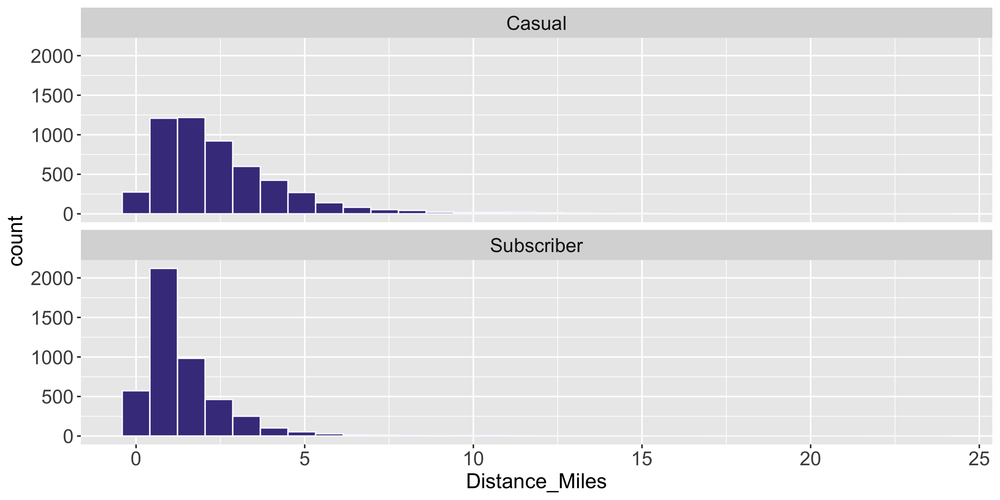
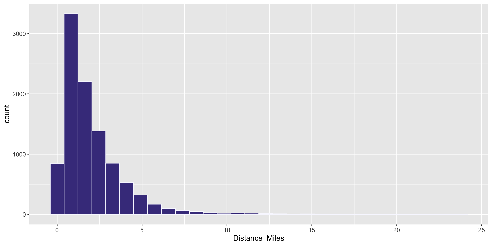
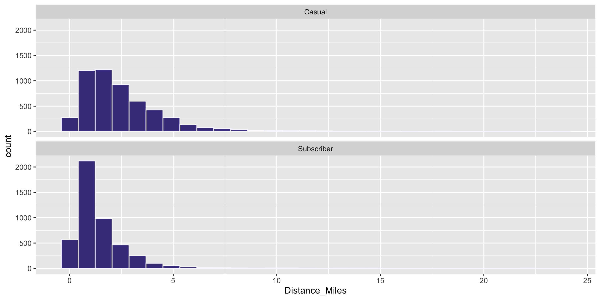
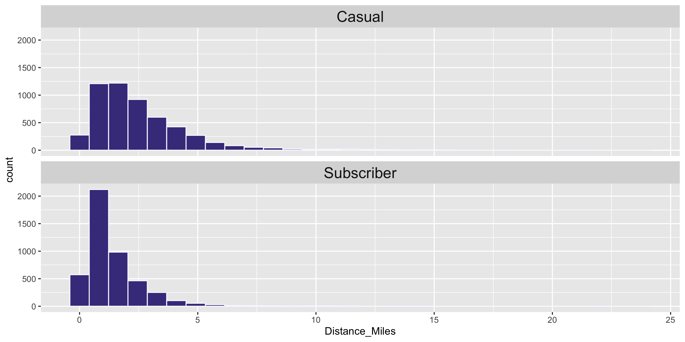
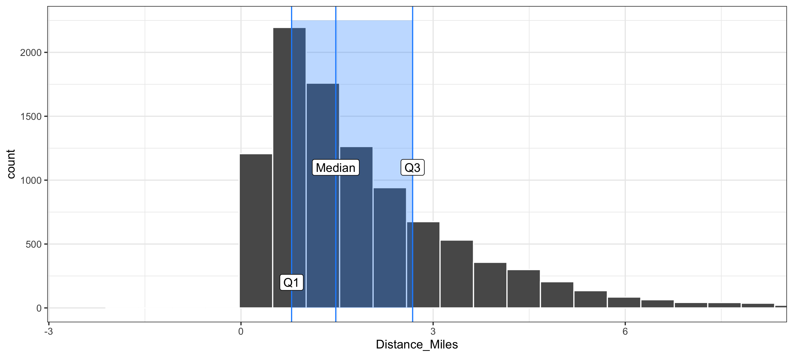

'data.frame': 9999 obs. of 19 variables:
$ RouteID : int 4074085 3719219 3789757 3576798 3459987 3947695 3549550 4411957 4098004 4096862 ...
$ PaymentPlan : chr "Subscriber" "Casual" "Casual" "Subscriber" ...
$ StartHub : chr "SE Elliott at Division" "SW Yamhill at Director Park" "NE Holladay at MLK" "NW Couch at 2nd" ...
$ StartLatitude : num 45.5 45.5 45.5 45.5 45.5 ...
$ StartLongitude : num -123 -123 -123 -123 -123 ...
$ StartDate : chr "8/17/2017" "7/22/2017" "7/27/2017" "7/12/2017" ...
$ StartTime : chr "10:44:00" "14:49:00" "14:13:00" "13:23:00" ...
$ EndHub : chr "Blues Fest - SW Waterfront at Clay - Disabled" "SW 2nd at Pine" "NE Alberta at NE 29th/30th - Community Corral" "NW Raleigh at 21st" ...
$ EndLatitude : num 45.5 45.5 45.6 45.5 45.5 ...
$ EndLongitude : num -123 -123 -123 -123 -123 ...
$ EndDate : chr "8/17/2017" "7/22/2017" "7/27/2017" "7/12/2017" ...
$ EndTime : chr "10:56:00" "15:00:00" "14:42:00" "13:38:00" ...
$ TripType : logi NA NA NA NA NA NA ...
$ BikeID : int 6163 6843 6409 7375 6354 6088 6089 5988 6857 6847 ...
$ BikeName : chr "0488 BIKETOWN" "0759 BIKETOWN" "0614 BIKETOWN" "0959 BETRUE MAX - RECON" ...
$ Distance_Miles : num 1.91 0.72 3.42 1.81 4.51 5.54 1.59 1.03 0.7 1.72 ...
$ Duration : num 11.5 11.4 28.3 14.9 60.5 ...
$ RentalAccessPath: chr "keypad" "keypad" "keypad" "keypad" ...
$ MultipleRental : logi FALSE FALSE FALSE FALSE TRUE FALSE ...
Summary Statistics
Megan Ayers
Stat 141 | Fall 2026
Wednesday, Week 2
Announcements
- The teaching team would love to see you in office hours!
- Megan’s office hours: For individual or small group help on problems or concepts
- Course assistant office hours: To work on assignments with your peers and get help from the course assistants when you are stuck
Reminders
- Test rendering your HW submission early
- If you haven’t already, make sure your access to Gradescope is set up
- Select pages for each problem part on Gradescope to receive full credit
Last Time
- Learned about the structure of
ggplot2 - Learn five standard graphs for numerical/quantitative data: histograms, boxplots, barplots, scatterplots, and linegraphs
Goals for Today
- Consider measures for numerically summarizing quantitative data
- Center
- Spread/variability
- Consider measures for numerically summarizing categorical data
- Contingency tables
Import the Data
Summarizing Data
| RouteID | PaymentPlan | StartHub | Distance_Miles | |
|---|---|---|---|---|
| 25 | 3596434 | Subscriber | NW 18th at Flanders | 0.59 |
| 26 | 3607170 | Subscriber | NW Raleigh at 21st | 0.71 |
| 27 | 3631639 | Casual | SW 2nd at Pine | 3.15 |
| 28 | 3912181 | Casual | SE Water at Taylor | 5.89 |
| 29 | 4031739 | Casual | SE Clay at Water | 1.34 |
| 30 | 3859969 | Casual | SW Naito at Morrison | 1.56 |
| 31 | 4315016 | Casual | NW Everett at 22nd | 3.50 |
| 32 | 4252609 | Casual | NW Flanders at 14th | 1.81 |
| 33 | 3809564 | Casual | NA | 2.74 |
- Hard to do by eyeballing a spreadsheet with many rows!
Summarizing Data Visually

For a quantitative variable, often want to answer:
What is an average value (the center)?
What is the trend/shape of the variable?
How much variation is there from case to case (spread)?
Q: I will sometimes ask you to assess these qualitatively by eye. Let’s practice with these histograms.
To be more precise in assessing these we need to learn key summary statistics: Numerical values computed based on the observed cases.
Measures of Center
Mean: Average of all the observations
- \(n\) = Number of cases (sample size)
- \(x_i\) = value of the i-th observation
- Denote by \(\bar{x}\)
Measures of Center
Mean: Average of all the observations
- \(n\) = Number of cases (sample size)
- \(x_i\) = value of the i-th observation
- Denote by \(\bar{x}\)
\[ \bar{x} = \frac{1}{n} \sum_{i = 1}^n x_i \]
Measures of Center
Mean: Average of all the observations
- \(n\) = Number of cases (sample size)
- \(x_i\) = value of the i-th observation
- Denote by \(\bar{x}\)
\[ \bar{x} = \frac{1}{n} \sum_{i = 1}^n x_i \]
Measures of Center
Median: Middle value
- Half of the data falls below the median
- Denote by \(m\)
- If \(n\) is even, then it is the average of the middle two values
Measures of Center
Median: Middle value
- Half of the data falls below the median
- Denote by \(m\)
- If \(n\) is even, then it is the average of the middle two values
Measures of Center
Q: Why is the mean larger than the median?

Answer: the distribution is skewed. In skewed distributions, the mean is pulled farther in the direction of skew than the median.
Measures of Center
Note: The mean is very sensitive to outliers, while the median is not.
We call the median a robust statistic.
Summary statistic anecdote
In April 2026 the New York Times published an article titled “In Defense of Dumb Dogs.” The article describes research that found that a large majority (66%) of dog owners describe their dog as “smarter than average.”
NYT’s morning newsletter stated that this result was “statistically impossible.” Apparently many readers wrote in to complain, because the next morning’s newsletter included a (somewhat defensive) mea culpa about this flawed statement.
Q: Why was their statement flawed?
Computing Measures of Center by Groups
Question: Who travels further, on average? Casual biketown users or payment plan subscribers?

Computing Measures of Center by Groups
Handy dplyr functions that we’ll learn: group_by() and summarize().

Measures of Variability
- Want a statistic that captures how much observations deviate from the mean
- Find how much each observation deviates from the mean.
- Idea: Compute the average of the deviations
Measures of Variability
- Want a statistic that captures how much observations deviate from the mean
- Find how much each observation deviates from the mean.
- Idea: Compute the average of the deviations
\[ \frac{1}{n} \sum_{i = 1}^n (x_i - \bar{x}) \]
Measures of Variability
- Want a statistic that captures how much observations deviate from the mean
- Find how much each observation deviates from the mean.
- Idea: Compute the average of the deviations
\[ \frac{1}{n} \sum_{i = 1}^n (x_i - \bar{x}) \]
Problem?
Measures of Variability
- Want a statistic that captures how much observations deviate from the mean
NEW proposal:
- Find how much each observation deviates from the mean.
- Compute the average of the squared deviations.
Measures of Variability
- Want a statistic that captures how much observations deviate from the mean
NEW proposal:
- Find how much each observation deviates from the mean.
- Compute the average of the squared deviations.
Measures of Variability
- Want a statistic that captures how much observations deviate from the mean
NEW proposal, formula:
- Find how much each observation deviates from the mean.
- Compute the (nearly) average of the squared deviations.
- Called sample variance \(s^2\).
Measures of Variability
- Want a statistic that captures how much observations deviate from the mean
NEW proposal, formula:
- Find how much each observation deviates from the mean.
- Compute the (nearly) average of the squared deviations.
- Called sample variance \(s^2\).
\[ s^2 = \frac{1}{n - 1} \sum_{i = 1}^n (x_i - \bar{x})^2 \]
- We’ll learn why we divide by \(n-1\) instead of \(n\) later in the course.
Measures of Variability
- Want a statistic that captures how much observations deviate from the mean
Measures of Variability
- Want a statistic that captures how much observations deviate from the mean
- Find how much each observation deviates from the mean.
- Compute the (nearly) average of the squared deviations (\(s^2\)).
- Because observations are squared, units differ from original data.
- The square root of the sample variance is called the sample standard deviation \(s\).
Visualizing Standard Deviation
- The standard deviation measures the typical size of deviations from the mean.
- For most data sets, the large majority of observations are within 2 standard deviations of the mean.
Measures of Variability
- In addition to the sample standard deviation and the sample variance, there is the sample interquartile range (IQR):
\[ \mbox{IQR} = \mbox{Q}_3 - \mbox{Q}_1 \]
- Imagine we sort our data and divide it into four evenly sized chunks (quartiles)
- 25% of all observations are less than the first quartile Q1
- 25% of all observations are greater than the third quartile Q3
Visualizing the IQR
- In addition to the sample standard deviation and the sample variance, there is the sample interquartile range (IQR):
\[ \mbox{IQR} = \mbox{Q}_3 - \mbox{Q}_1 \]

Comparing Measures of Variability
- Q: Which is more robust to outliers, the IQR or \(s\)?

- Q: Which is more commonly used, the IQR or \(s\)?
Summarizing Categorical Variables
New data set: Cambridge dogs
'data.frame': 31820 obs. of 10 variables:
$ Dog_Name : chr "STELLA" "George" "Jack" "Tika" ...
$ Dog_Breed : chr "SCHNOODLE" "Maltipoo" "Poodle" "Hound" ...
$ Location_masked : chr "POINT (-71.136168 42.376682)" "POINT (-71.13607 42.395315)" "POINT (-71.114047 42.367352)" "POINT (-71.108359 42.372506)" ...
$ Latitude_masked : num 42.4 42.4 42.4 42.4 42.4 ...
$ Longitude_masked: num -71.1 -71.1 -71.1 -71.1 -71.1 ...
$ Neighborhood : chr "West Cambridge" "North Cambridge" "Riverside" "Mid-Cambridge" ...
$ Birth.Year : chr "01/01/2013 12:00:00 AM" "01/01/2021 12:00:00 AM" "01/01/2020 12:00:00 AM" "01/01/2016 12:00:00 AM" ...
$ Gender : chr "Female" "Male" "Male" "Female" ...
$ Expiration.Date : chr "01/01/2021 12:00:00 AM" "01/01/2023 12:00:00 AM" "01/01/2023 12:00:00 AM" "01/01/2024 12:00:00 AM" ...
$ Is.Active : chr "false" "false" "false" "false" ...Cambridge dogs data set
May want to focus on the dogs with the 5 most common names
dogs <- read.csv("https://data.cambridgema.gov/api/views/sckh-3xyx/rows.csv")
# Useful wrangling that we will come back to
dogs_top5 <- dogs %>%
mutate(Breed = case_when(Dog_Breed == "Mixed Breed" ~ "Mixed",
TRUE ~ "Single")) %>%
filter(Dog_Name %in% c("Luna", "Charlie", "Lucy", "Cooper", "Rosie"))
head(dogs_top5) Dog_Name Dog_Breed Location_masked
1 Lucy Standard Poodle POINT (-71.079075 42.368232)
2 Cooper Treeing Tennessee Brindle POINT (-71.13607 42.395315)
3 Charlie Beagle / Hound POINT (-71.12829 42.385157)
4 Lucy Mixed Breed POINT (-71.096823 42.365754)
5 Cooper Carolina Dog / Australian Cattle Dog POINT (-71.12829 42.385157)
6 Luna Labrador Retriever POINT (-71.152822 42.38067)
Latitude_masked Longitude_masked Neighborhood Birth.Year
1 42.3682 -71.0791 East Cambridge 01/01/2017 12:00:00 AM
2 42.3953 -71.1361 North Cambridge 01/01/2017 12:00:00 AM
3 42.3852 -71.1283 Neighborhood Nine 01/01/2011 12:00:00 AM
4 42.3658 -71.0968 The Port 01/01/2018 12:00:00 AM
5 42.3852 -71.1283 Neighborhood Nine 01/01/2023 12:00:00 AM
6 42.3807 -71.1528 Strawberry Hill 01/01/2015 12:00:00 AM
Gender Expiration.Date Is.Active Breed
1 Female 01/01/2020 12:00:00 AM false Single
2 Male 01/01/2025 12:00:00 AM false Single
3 Male 01/01/2023 12:00:00 AM false Single
4 Female 01/01/2021 12:00:00 AM false Mixed
5 Male 01/01/2027 12:00:00 AM true Single
6 Female 01/01/2024 12:00:00 AM false SingleFrequency Table
Distributions of categorical variables can be presented in tables and summarized in bar charts.
Q: Why can’t we use mean or standard deviation here?
Another ggplot2 geom: geom_col()
If you have already aggregated the data, you will use geom_col() instead of geom_bar() to make a barplot.
Dog_Name n
1 Charlie 252
2 Cooper 134
3 Lucy 175
4 Luna 287
5 Rosie 167Another ggplot2 geom: geom_col()
And you can use fct_reorder to order bars by value
Dog_Name n
1 Charlie 252
2 Cooper 134
3 Lucy 175
4 Luna 287
5 Rosie 167Contingency Table
To compare 2 categorical variables, we can use a contingency table
Dog_Name Breed n
1 Charlie Mixed 22
2 Charlie Single 230
3 Cooper Mixed 14
4 Cooper Single 120
5 Lucy Mixed 19
6 Lucy Single 156
7 Luna Mixed 30
8 Luna Single 257
9 Rosie Mixed 8
10 Rosie Single 159Conditional Proportions
Conditional Proportions
# A tibble: 10 × 4
# Groups: Dog_Name [5]
Dog_Name Breed n prop
<chr> <chr> <int> <dbl>
1 Charlie Mixed 22 0.0873
2 Charlie Single 230 0.913
3 Cooper Mixed 14 0.104
4 Cooper Single 120 0.896
5 Lucy Mixed 19 0.109
6 Lucy Single 156 0.891
7 Luna Mixed 30 0.105
8 Luna Single 257 0.895
9 Rosie Mixed 8 0.0479
10 Rosie Single 159 0.952 We’ll go over these data wrangling functions on Wednesday!
Conditional Proportions
# A tibble: 10 × 4
# Groups: Dog_Name [5]
Dog_Name Breed n prop
<chr> <chr> <int> <dbl>
1 Charlie Mixed 22 0.0873
2 Charlie Single 230 0.913
3 Cooper Mixed 14 0.104
4 Cooper Single 120 0.896
5 Lucy Mixed 19 0.109
6 Lucy Single 156 0.891
7 Luna Mixed 30 0.105
8 Luna Single 257 0.895
9 Rosie Mixed 8 0.0479
10 Rosie Single 159 0.952 # A tibble: 10 × 4
# Groups: Breed [2]
Dog_Name Breed n prop
<chr> <chr> <int> <dbl>
1 Charlie Mixed 22 0.237
2 Charlie Single 230 0.249
3 Cooper Mixed 14 0.151
4 Cooper Single 120 0.130
5 Lucy Mixed 19 0.204
6 Lucy Single 156 0.169
7 Luna Mixed 30 0.323
8 Luna Single 257 0.279
9 Rosie Mixed 8 0.0860
10 Rosie Single 159 0.172 Q: How does the interpretation change based on which variable you condition on?
Recap: quantitative data
We’ll frequently summarize quantitative data by assessing a distribution’s:
- Center
- Spread (aka variability)
- Shape
We can most easily assess these visually via boxplot or histogram
We quantify center and spread by calculating (or sometimes by eyeballing) summary statistics
- The mean or median (
mean(),median()) for center - The standard deviation, variance, or interquartile range (
sd(),var(),IQR()) for spread
- The mean or median (
In this class we’ll usually assess shape visually (symmetric, right-skewed, or left-skewed?)
- We’ll see a quantitative example on the homework
Recap: categorical data
- We’ll frequently summarize categorical data by making tables of category counts or proportions
- Table of counts for 1 categorical variable = frequency table or one-way frequency table
- Table of counts for 2 categorical variables = contingency table or two-way frequency table
- Table of proportions with 2 categorical variables = conditional proportions table
- We can most easily visualize these tables via barplots
Reminders
- The teaching team would love to see you in office hours!
Next time:
- We’ll define data wrangling and
- Learn to use more functions and methods to summarize and wrangle data